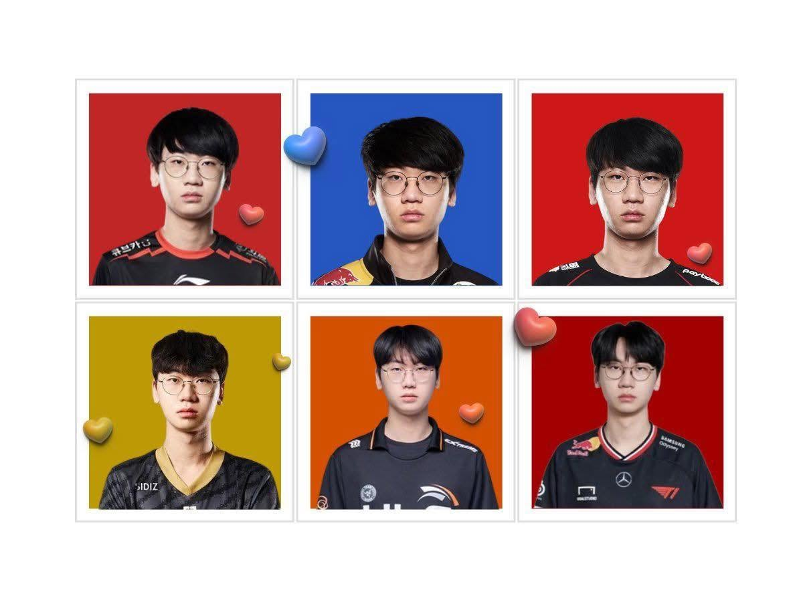
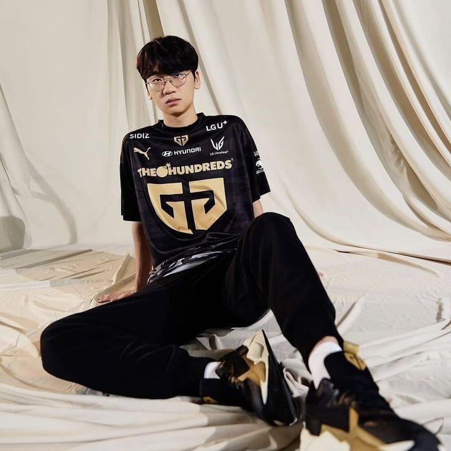
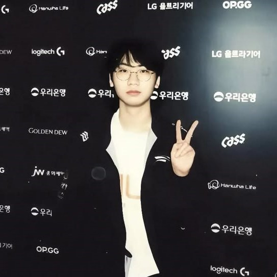
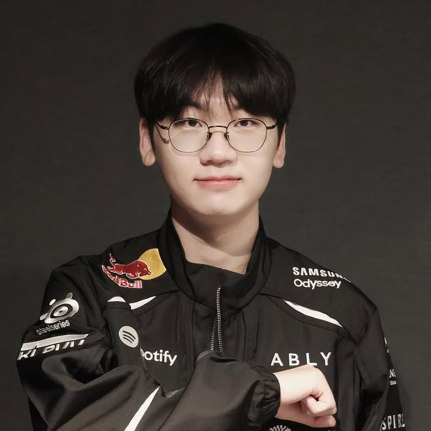
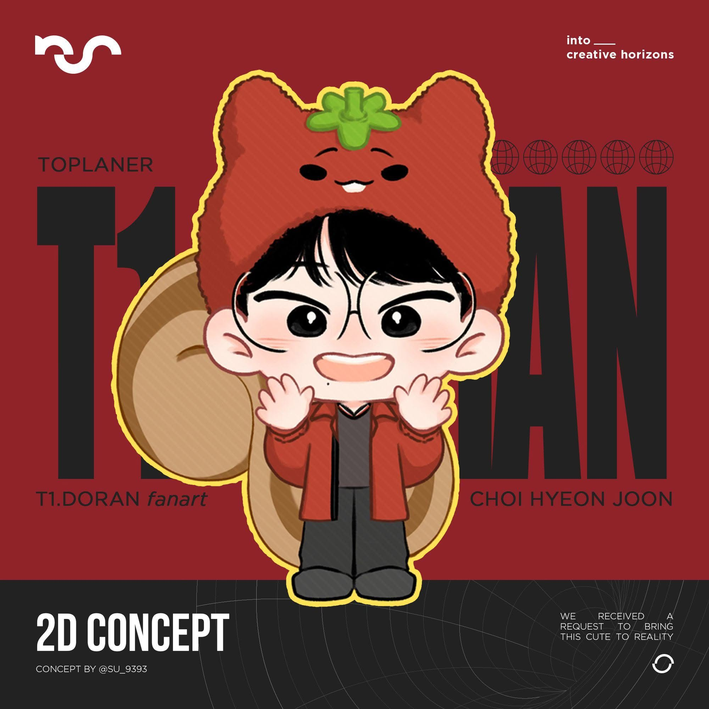
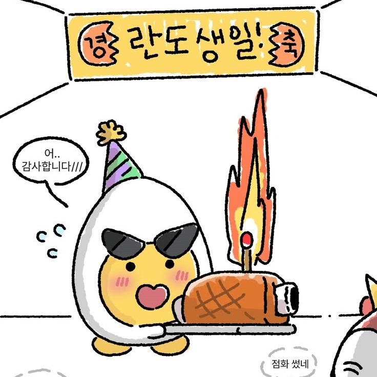
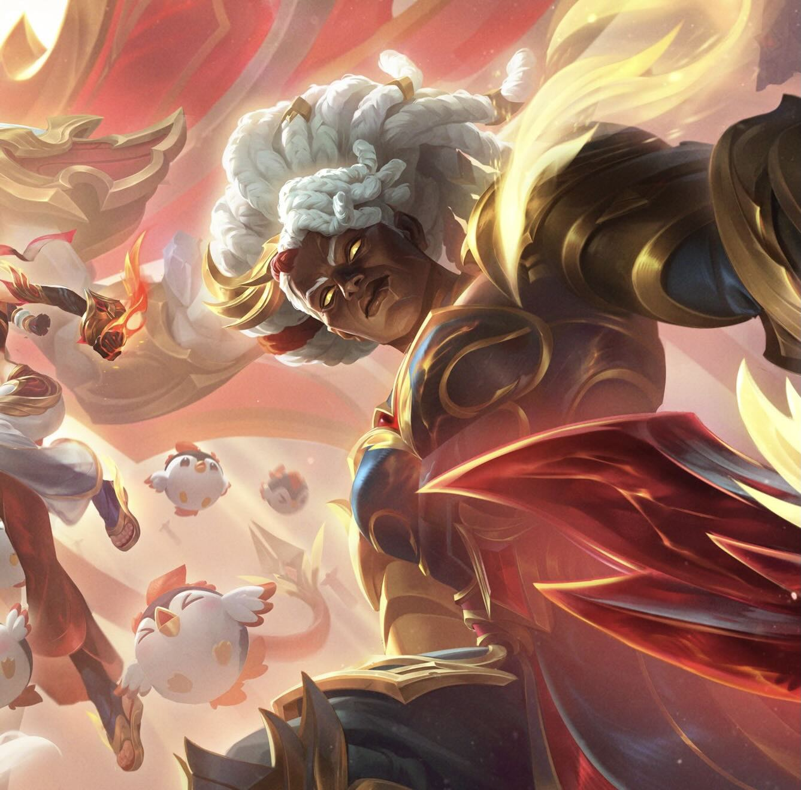

Fun Facts & TMI (Too Much Information)
- Dual Personality: Solemn and razor-focused on stage (sometimes mistaken for looking sleepy or nervous), but exceptionally cheerful, polite, and full of fan-service at fan meetings.
- Mascot Animal: Often depicted as a friendly squirrel with two cute front teeth, a fluffy rabbit, or a round egg.
- Solo Queue Legend: Famous for unconventional practice sessions under IDs like "MochiPeachMochiPeach" and "Want to be Young Again" .
- Longtime Teammates: Developed iconic synergy with Chovy across multiple rosters (Griffin, DRX, Gen.G), and reunited with Keria on T1 .
Visual Collection: Jerseys, Mascots & Champions






